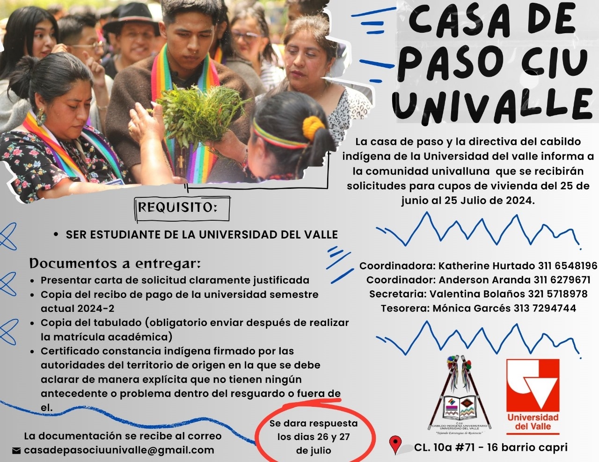
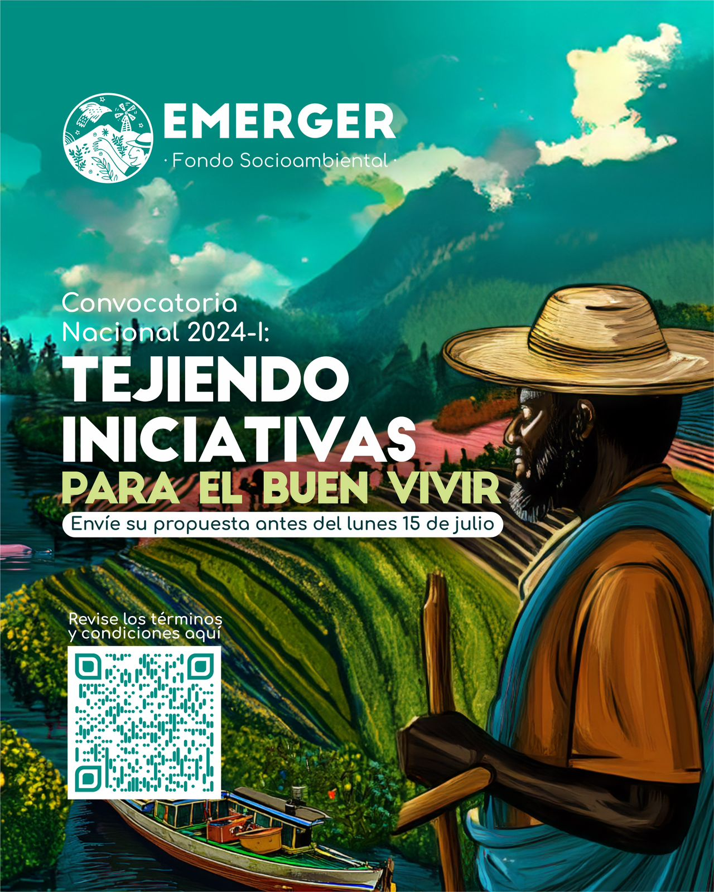
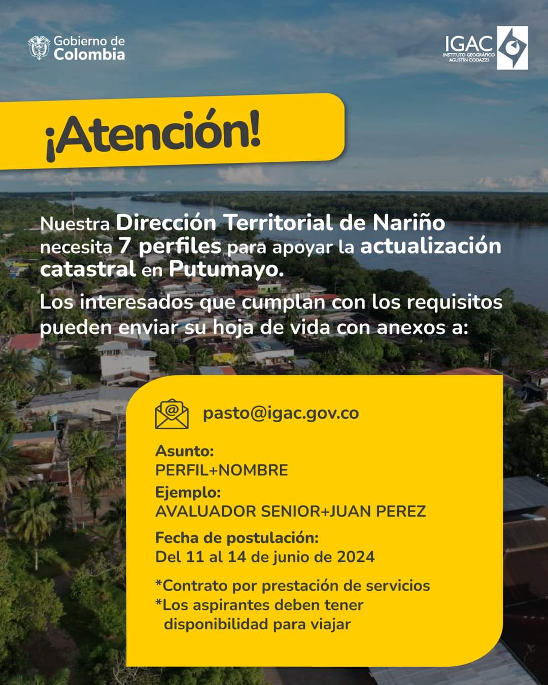

Bonito día,
Un saludo de hermandad y resistencia. Desde la Representación Nacional del Fondo Álvaro Ulcué 2024-2026, les informamos que se da apertura a la convocatoria 2024-2.
FECHA:
22 AGOSTO 2024 - 19 SEPTIEMBRE 2024
"A los jóvenes los invito a estudiar y a luchar fuertemente sin cansarse, ojalá no les dé pena ser indígenas." - Nasa Pal Álvaro Ulcué
Cxute pay // Yupaychani // Unkua pai // Hasay Hasay // Karey Karey // 🌿✊🏾🌀🔥

_______________________________________________________________
Bonito día,
Compañeros y compañeras, las personas que el día 21 de julio quieran vender o exhibir emprendimientos relacionados con artesanías o comidas propias del territorio, pueden escribirme para reservar el espacio en el polideportivo.
Nota: No se garantiza toldo, pero si necesitan, se les hará préstamo de mesas. El espacio para bebidas alcohólicas no está permitido.

_______________________________________________________________
Buenos días a todos,
La asistencia a la reunión es obligatoria para todos los beneficiarios del fondo.
La asistencia virtual solo será tenida en cuenta si envían un permiso justificado.

_______________________________________________________________
Buenos días, comunidad estudiantil del CIU-Males.
Deseándoles éxitos en sus labores diarias y académicas.
Les informamos que para quienes vayan a realizar el proceso de renovación del Fondo Álvaro Ulcué para el periodo 2024 - 2, el calendario de renovación inicia a partir del 4 de julio hasta el 13 de diciembre de 2024.
Gracias por su atención. Que tengan una feliz tarde. 🌻

_______________________________________________________________
Cordial saludo de lucha, hermandad y resistencia a toda nuestra comunidad universitaria y egresados.
De parte de la corporación del CIU Males 2024, se les extiende la invitación a una asamblea general de carácter obligatoria, con el propósito de tratar la organización de la minga.
Se les pide por favor ser puntuales. Las y los esperamos.

_______________________________________________________________
Cordial y fraternal saludo. El Cabildo Indígena de la Universidad del Valle informa que se encuentra abierta la convocatoria para solicitudes de cupos de la casa de paso 🍃

_______________________________________________________________
Inti Raymi✨
Fiesta al taita sol
21 de junio
"Que la luz del solsticio ilumine nuestros corazones y renueve nuestra conexión con la madre tierra"🌞
Guan ampa, Guan kumpa, Guan Gapa 🌀 Bonito salir del sol y el nuevo amanecer 🪶
Para comentarles que para el domingo se realizará el desfile en la festividad del Inti Raymi.
Por lo cual la organización será por universidades, cada una se organizará para realizar el pendón correspondiente. Comunicarse con cada corporante.
Nota: Recuerden que las siguientes universidades sí tienen pendón:
Nacional
Todas las privadas
_______________________________________________________________
¡Abierta la Convocatoria Nacional 2024-I: Tejiendo iniciativas para el Buen Vivir! ✨
Este es un llamado para iniciativas lideradas por organizaciones y colectivos de base comunitaria a nivel nacional (excepto Amazonía), enfocadas en:
Seguridad y soberanía alimentaria 🌾
Medios de vida sustentable 🤝
Defensa del territorio 🌳
Comunicación alternativa 🎙
La convocatoria estará abierta hasta el lunes 15 de julio de 2024. Consulte los términos y condiciones aquí 📄
_______________________________________________________________

_______________________________________________________________
Informe de la Asamblea:
Reciban un cordial saludo de armonía, hermandad y resistencia. De parte de la corporación del Cabildo Indígena Universitario Males (CIU- Males), los invitamos a participar de la asamblea virtual extraordinaria para dialogar sus sentires en cuanto a la invitación a Ipiales por parte del Cabildo Mayor y así poder concertar las decisiones en cuanto a los estudiantes que no están en el territorio. Esperamos contar con su asistencia.
Asamblea Extraordinaria CIU-Males
Domingo, 9 de junio · 6:00 – 8:00pm
Zona horaria: America/Bogota
Información para unirse con Google Meet
Enlace de la videollamada
_______________________________________________________________
Invitación del Señor Gobernador Javier Canacuan:
fecha: 9 de julio de 2024
Buenas tardes comunidad estudiantil del CIU - Males, Por parte del señor gobernador Ing. Javier Canacuan, se extiende la siguiente invitación a ser partícipes del recibimiento del señor presidente Gustavo Petro, quien nos estará visitando el día martes 11 de junio de 2024, en el Resguardo de Ipiales.
Nota: Para los beneficiarios del Fondo Álvaro Ulcue Chocué es obligatoria su asistencia. En caso de no poder asistir, pueden asistir los familiares. Por favor, confirmar su asistencia. Su asistencia será registrada.
Para los que aún no han confirmado su asistencia, por favor escribir a mi número de WhatsApp 3114065655. Recuerden que hasta el día de hoy a las 6:00 pm pueden confirmar su asistencia.